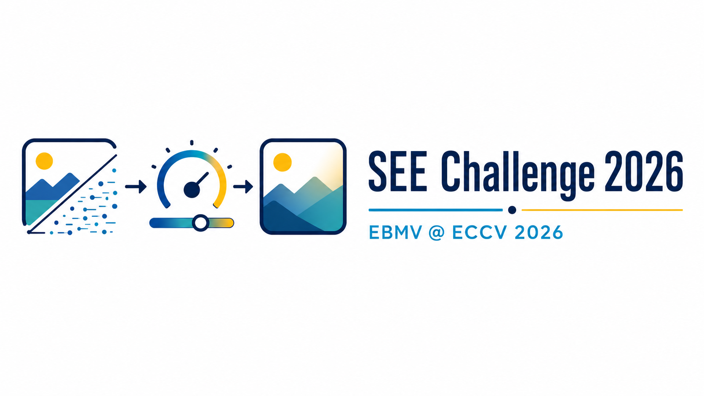
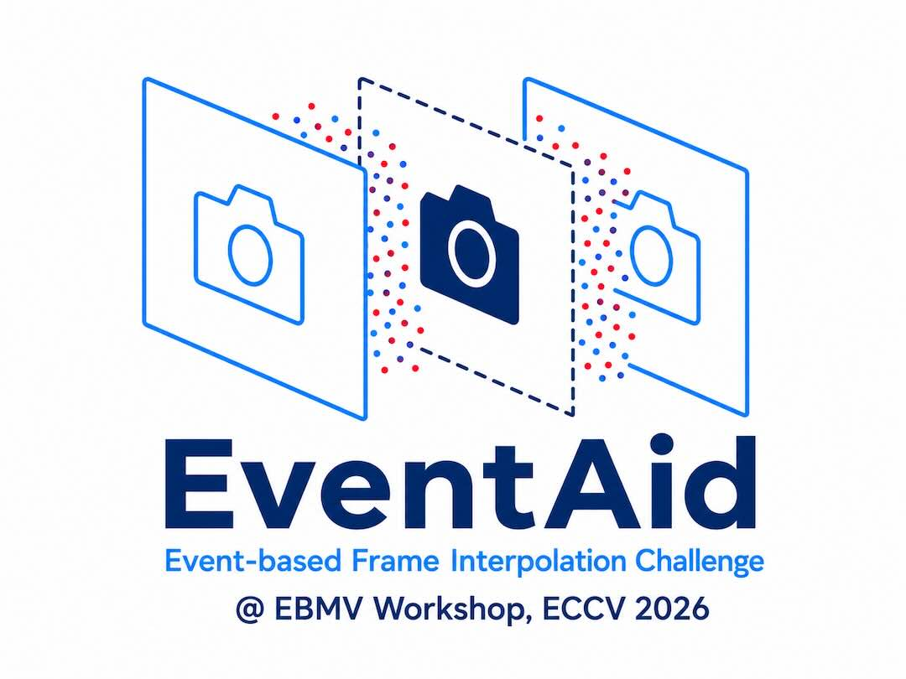
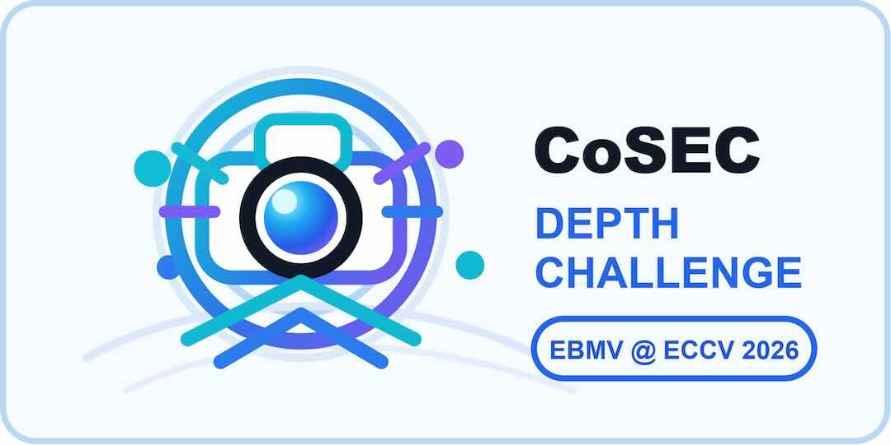
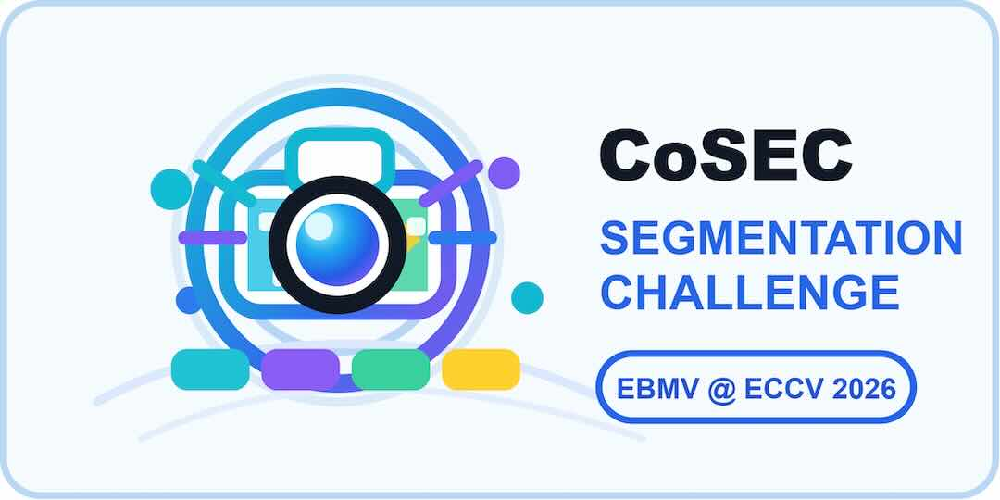
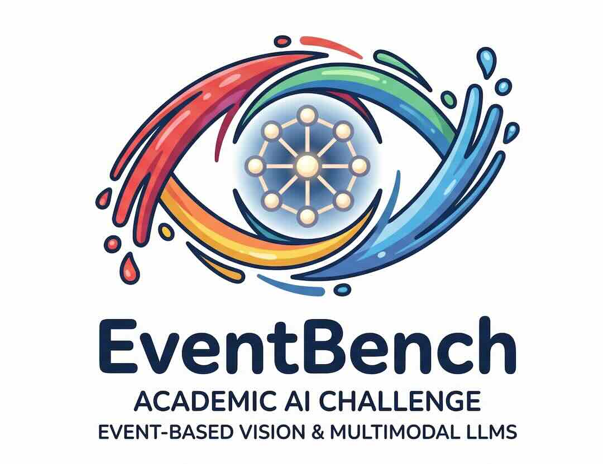
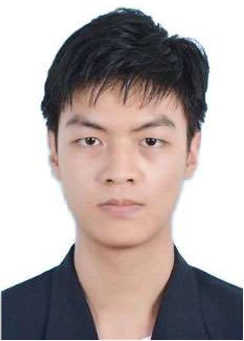

Challenge & Website Launch
May 10, 2026
Challenge & Website Launch
May 10, 2026
Training / Validation Set Release
May 12, 2026
Test Set & Evaluation Server Online
June 20, 2026
Submission Start
July 01, 2026
Challenge Results Announcement
July 5, 2026
Abstract Registration
July 15, 2026
Submission Deadline
July 20, 2026
Notification to Authors
August 5, 2026
Camera-ready Deadline
August 12, 2026
ECCV 2026 Workshop
Sept 8–13, 2026
Our workshop focuses on research at the intersection of event-based sensing and multimodal vision, spanning the full pipeline from sensing systems and low-level imaging to perception and high-level understanding.
Call for Papers
All submissions must follow the ECCV 2026 official paper template and formatting guidelines. View the official submission policies.
For substantial, original research contributions with a complete technical and experimental presentation. References are excluded from the page limit.
For concise technical contributions, especially workshop challenge solutions. References are excluded from the page limit.
All submissions will undergo peer review by the Workshop Program Committee. Submissions will be assessed according to the selected track and the following criteria: Workshop Relevance, Technical Quality, Clarity of Presentation, Track Appropriateness.

A benchmark challenge for event-guided brightness adjustment under broad lighting conditions, including low light, over-exposure, mixed illumination, and high-contrast scenes. Participants use RGB frames and event streams to restore well-exposed and structurally faithful images.
Dataset: SEE-600K
Challenge Details Competition Page Dataset Baseline Code Evaluation Server Leaderboard

A benchmark challenge for event-guided high-frame-rate video reconstruction. Participants use low-frame-rate RGB videos and event streams to recover high-frame-rate videos with accurate restoration of fast motion.
Dataset: EventAid, ERF-X170FPS

A benchmark challenge for event-guided monocular depth estimation in real-world scenes. Participants use RGB frames and event streams to predict accurate depth maps.
Dataset: CoSEC

A benchmark challenge for event-guided semantic segmentation in real-world scenes. Participants use RGB frames and event streams to predict pixel-level semantic labels.
Dataset: CoSEC

This challenge benchmarks MLLMs' spatial reasoning on event-based vision, focusing on object counting, absolute distance estimation, and spatial relationship reasoning.
Dataset: EventBench
This challenge aims to systematically evaluate and push the boundaries of MLLMs in understanding and reasoning over event-based vision data. Our goal is to foster the development of robust, parameter-efficient multi-modal models capable of deep semantic comprehension, spatial-temporal reasoning, and fine-grained recognition within complex event streams.
Dataset: EventBench
| Time | Session | Speakers / Details |
|---|---|---|
| 08:00 - 08:15 | Opening and Welcome | Workshop introduction and opening remarks |
| 08:15 - 09:45 | Invited Talks Session I |
08:15 - 08:45 Prof. Kostas Daniilidis 08:45 - 09:15 Prof. Guillermo Gallego 09:15 - 09:45 Prof. Bo Mu |
| 09:45 - 10:00 | Coffee Break | |
| 10:00 - 11:00 | Challenge Session |
Six Challenge Track winner presentations, 10 min each |
| 11:00 - 12:30 | Invited Talks Session II |
11:00 - 11:30 Prof. Laurent Kneip 11:30 - 12:00 Prof. Daniel Gehrig 12:00 - 12:30 Prof. Federico Becattini |
| 12:30 - 13:30 | Lunch Break | |
| 13:30 - 15:00 | Invited Talks Session III |
13:30 - 14:00 Prof. Shintaro Shiba 14:00 - 14:30 Prof. Liyuan Pan 14:30 - 15:00 Prof. Priyadarshini Panda（Online） |
| 15:00 - 15:15 | Coffee Break | |
| 15:15 - 16:15 | Invited Talks Session IV |
15:15 - 15:35 Dr. Min Liu 15:35 - 15:55 Yan Chen 15:55 - 16:15 Rongfei Nong |
| 16:15 - 16:45 | Poster and Discussion | Poster viewing, networking, and discussion |
| 16:45 - 17:00 | Awards and Closing |
Best paper awards, acknowledgements, closing remarks, and group photo |

University of Pennsylvania, USA
Multi-view geometry, 3D scene reconstruction, and geometric vision theory.

Technical University of Berlin, Germany
Event-based vision, continuous-time motion estimation, and spatiotemporal modeling.
OmniVision Technologies, Inc., USA
Event-based vision applications, neuromorphic sensors, and real-world deployment.

University of Pennsylvania, USA
Event-based optical flow, learning-based motion estimation, and high-speed vision.
University of Siena, Italy
Computer Vision, Event Cameras, Drone Detection, Human Understanding

The University of Tokyo, Japan
Event-based perception for autonomous driving and large-scale real-world deployment.

Beijing Institute of Technology, China
Event cameras, spiking vision models, and high-speed visual perception.

University of Southern California, USA
Neuromorphic computing, spiking neural networks, and event-driven learning systems.
DVSense Technology Co., Ltd., China
Event camera sensors, imaging hardware design, and industrial vision systems.
AlpsenTek, Switzerland
Neuromorphic vision sensors, edge imaging devices, and low-power perception hardware.
Forma AI, Xingtai Qiyuan Technology Co., Ltd., China
Brain-inspired embodied AI, multimodal world model, and event-based perception.

Hanyu Zhou
National University of Singapore

Yunfan Lu
Hong Kong University of Science and Technology (Guangzhou)
Shaoyu Liu
Xidian University

Haoyue Liu
Huazhong University of Science and Technology

Peiqi Duan
Peking University

Shihan Peng
Huazhong University of Science and Technology

Yinqiang Zheng
University of Tokyo

Boxin Shi
Peking University

Kuk-Jin Yoon
Korea Advanced Institute of Science and Technology

Hui Xiong
Hong Kong University of Science and Technology (Guangzhou)

Gim Hee Lee
National University of Singapore

Davide Scaramuzza
University of Zurich